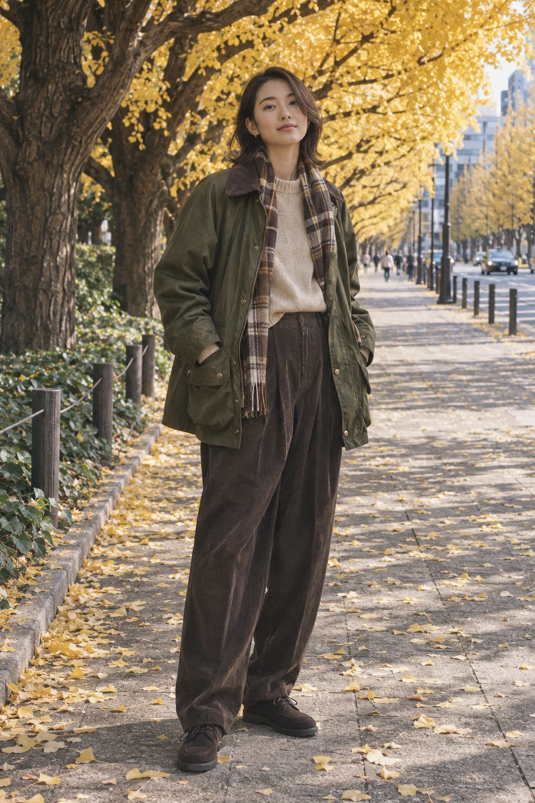

PLAN A · PINNED
紅葉季
日本红叶季自北向南渐次绽放，每个地区有着独特的温度与风景。根据不同地域的气候特征与文化氛围，为你量身定制穿搭方案。
漫步千年古都的石板小路，和风外套搭配素色内搭，在红叶与古寺间留下一抹沉静的身影。推荐驼色大衣、米色针织衫、深棕长裙。
融入都市的摩登节奏，利落剪裁的深色系外套搭配明色围巾，在银杏与红叶交织的街角定格都市秋意。
北国早寒，厚实大衣与围巾是必备。以深色系为底，点缀红色针织单品，与白雪红叶相映成趣。
在鹿群与古木之间，选择大地色系的层叠穿搭，柔软质地与自然色调融入这片古老土地的呼吸。推荐棕色系叠穿、棉麻围巾、短靴。
度假胜地的轻松氛围，毛衣披肩搭配修身长裤，漫步林间小道，享受秋日阳光的温柔。
红叶季的色彩灵感取自自然本身。从枫红到苔藓绿，四种配色方案帮你将秋天的调色盘穿在身上。
以日本枫叶的标志色为核心，从深红到橘棕的渐变。搭配米色或白色内搭平衡视觉，是红叶季最经典的色彩选择。
银杏与稻穗的金黄色调，温暖而优雅。搭配深棕或橄榄绿增加层次感，适合东京街头的秋日午后。
取自苔藓与常绿树的自然色调，与红叶形成绝妙对比。适合户外场景与山林漫步，沉稳而不失生机。
棕色系的温暖包裹感，是秋天最舒适的选择。从焦糖到栗色，搭配任何红叶背景都不会突兀，百搭且高级。
11月是日本红叶最盛期，但各地温差显著。从北海道的初冬到九州的暖秋，一键掌握各地气温与穿衣指南。
数据基于历年11月平均值 · 实际天气请出发前确认
红叶季早晚温差可达10°C以上。建议采用「外套+针织+内搭」三层叠穿法，方便随时增减。内搭选择薄款打底，中间层以针织衫为主，外层防风大衣收尾。
一条质感围巾是红叶季的万能单品——既可保暖，又能为整体穿搭注入色彩亮点。帽子推荐贝雷帽或宽檐帽，手套选择皮质薄款，兼顾温度与风度。
红叶名胜多有石阶山路，舒适度优先。推荐切尔西靴、低跟短靴或运动鞋。颜色以深棕、黑色为佳，百搭且耐脏。避免高跟鞋与白色鞋款。
精选日本红叶季最美拍摄圣地，附上每个场景的最佳穿搭建议，让你的旅行照片成为杂志大片。
自由组合 3 处典型红叶场景与 3 套秋日穿搭，实时切换预生成实景样片、并排对比 A/B 方案，并按当地气温核对体感舒适度与行李清单。

PLAN B · ACTIVE